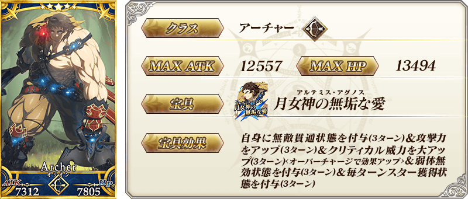
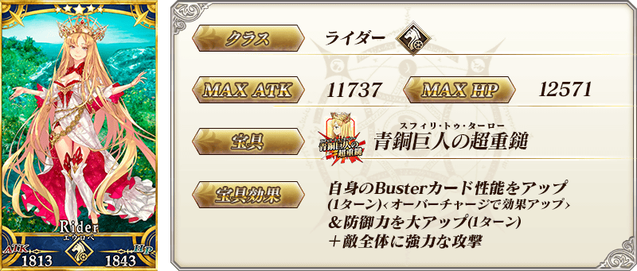
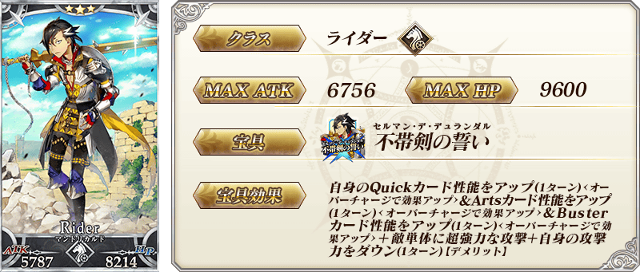
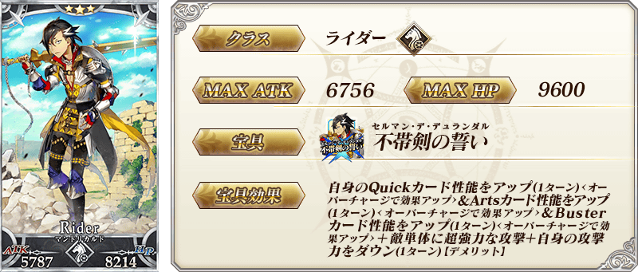
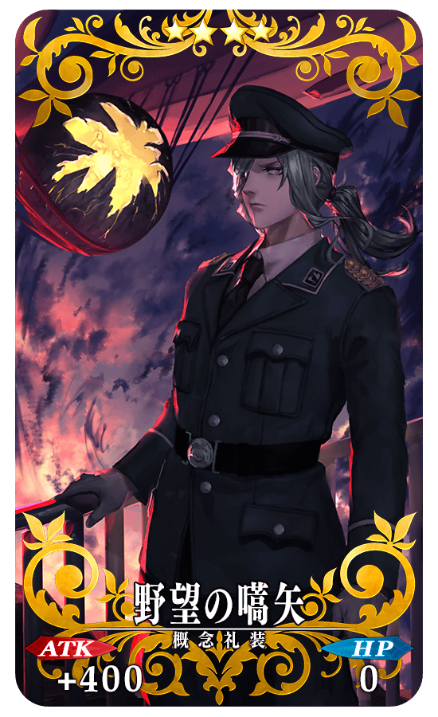
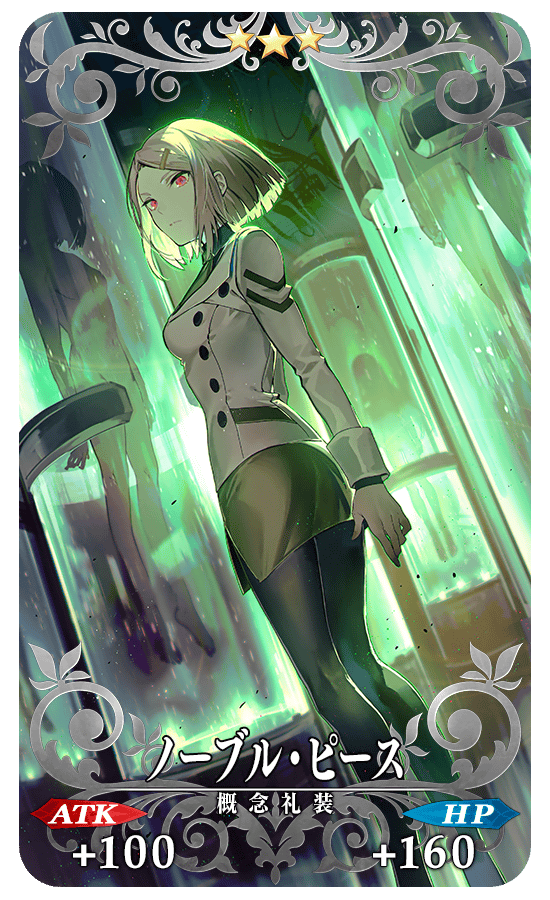
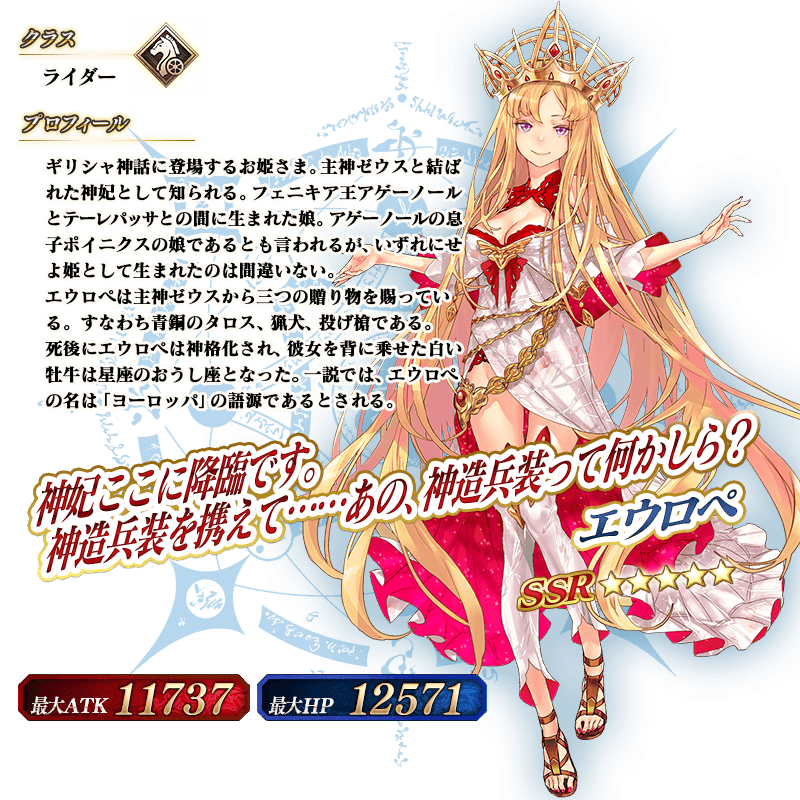
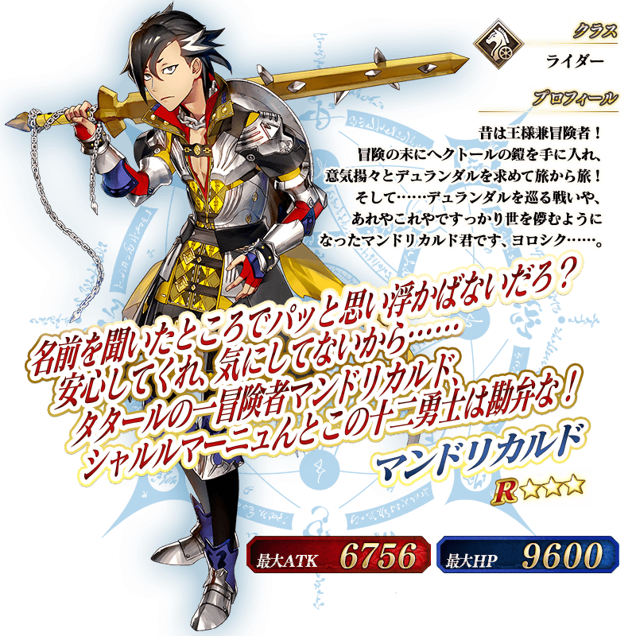

◆「亞特蘭提斯Pick Up召喚(每日交替)」期間◆
期間:2019年12月18日(三) 21:00～12月31日(二) 22:59
為了記念第2部 第5章「Lostbelt No.5 神代巨神海洋 亞特蘭提斯 擊落神之日」的開幕，舉辦期間限定「亞特蘭提斯Pick Up召喚(每日交替)」！ ※未通過第2部 第5章「Lostbelt No.5 神代巨神海洋 亞特蘭提斯 擊落神之日」的狀態也能進行「亞特蘭提斯Pick Up召喚(每日交替)」。
第2部 第5章「Lostbelt No.5 神代巨神海洋 亞特蘭提斯 擊落神之日」相關的「★5(SSR)超人俄里翁」以期間限定登場！
並且「★5(SSR)歐羅巴」「★3(R)曼迪卡爾多」也新登場！
本次包含上述Pick Up4騎的從者Pick Up！
「★5(SSR)超人俄里翁」「★5(SSR)歐羅巴」以每日交替Pick Up、「★4(SR)Assassin・樂園(望月千代女)」「★3(R)曼迪卡爾多」常駐Pick Up！
「★5(SSR)救済願いし者」「★4(SR)野望の嚆矢」「★3(R)ノーブル・ピース」做為新概念禮裝先行新登場！
並且，翻新★3(R)概念禮裝的一部份陣容！
Pick Up期間中，Pick Up對象從者的出現機率提升！
詳情請在聖晶石召喚畫面左下的召喚詳細確認。
11次召喚中確定1張★4(SR)以上和確定1位★3(R)以上的從者！ ※確定★4(SR)以上包含從者和概念禮裝。 ※本頁面皆為開發中圖片。會有與實際圖片相異的情況。
◆有關從者的注意◆
※請注意「亞特蘭提斯Pick Up召喚(每日交替)」做為每日交替，「★5(SSR)超人俄里翁」「★5(SSR)歐羅巴」就算Pick Up期間中也會有不被抽出的日子。
※「★5(SSR)超人俄里翁」在Pick Up期間結束後不會追加到故事召喚。
※「★5(SSR)歐羅巴」「★3(R)曼迪卡爾多」自Pick Up期間結束後的2019年12月31日(二) 23:00，會追加到故事召喚。
※「★3(R)曼迪卡爾多」自Pick Up期間結束後的2019年12月31日(二) 23:00，會追加到友情點數召喚。
※「★4(SR)Assassin・樂園(望月千代女)」在Pick Up期間結束後仍會在故事召喚被抽出。
※關於隱藏真名尚未判明的從者，透過主線關卡的進行會讓從者及一部份份寶具的名稱變化。
◆有關從者真名的注意◆
在2018年12月31日(二) 23:00以後新配信的主線故事及期間限定活動、一部份關卡、宣傳活動及召喚中，會顯示隱藏真名的對象從者真名。
※2018年12月31日(一) 22:59前已經配信的主線故事、復刻活動、一部份關卡中不在此限。
◆有關概念禮裝的注意◆
※「★5(SSR)救済願いし者」「★4(SR)野望の嚆矢」「★3(R)ノーブル・ピース」的出現機率沒有提升。
※「★5(SSR)救済願いし者」「★4(SR)野望の嚆矢」「★3(R)ノーブル・ピース」自Pick Up期間結束後的2019年12月31日(二) 23:00，會追加到故事召喚。
※隨著翻新「★3(R)過ぎ去りし夢」在本Pick Up召喚為召喚對象外，只會在故事召喚被抽出。
※2019年12月31日(二) 23:00以後「★3(R)過ぎ去りし夢」也不會從故事召喚被抽出，追加至友情點數召喚。
◆「亞特蘭提斯Pick Up召喚(每日交替)」Pick Up內容◆
| Pick Up期間 | Pick Up內容 | |
|---|---|---|
| 每日交替Pick Up | 全天Pick Up | |
| 12/18(三) 21:00～ 12/20(五) 22:59 |
★5 超人俄里翁 ★5 歐羅巴 |
★4 Assassin・樂園(望月千代女) ★3 曼迪卡爾多 |
| 12/20(五) 23:00～ 12/22(日) 22:59 |
★5 超人俄里翁 | |
| 12/22(日) 23:00～ 12/24(二) 22:59 |
★5 歐羅巴 | |
|
12/24(二) 23:00～ 12/26(四) 22:59 |
★5 超人俄里翁 ★5 歐羅巴 |
|
|
12/26(四) 23:00～ 12/28(六) 22:59 |
★5 超人俄里翁 | |
|
12/28(六) 23:00～ 12/30(一) 22:59 |
★5 歐羅巴 | |
| 12/30(一) 23:00～12/31(二) 22:59 |
★5 超人俄里翁 ★5 歐羅巴 |
|
※請注意會以每日交替變更Pick Up的從者。
 ※上述「★5(SSR)超人俄里翁」的卡面為靈基再臨第2階段。

 
※上述「★3(R)曼迪卡爾多」的卡面為靈基再臨第3階段。

※上述「★3(R)曼迪卡爾多」的卡面為靈基再臨第3階段。


|
★★★★★SSR |
|  |
★★★★SR |
|  |
★★★R |
 ※上述「★5(SSR)超人俄里翁」的立繪為靈基再臨第2階段。
※上述「★5(SSR)超人俄里翁」的立繪為靈基再臨第2階段。

 ※上述「★3(R)曼迪卡爾多」的立繪為靈基再臨第3階段。
介紹「★5(SSR)超人俄里翁」的寶具演出！
在「Fate/Grand Order」官方網站內的公告中，以影片公開寶具演出，敬請確認。

介紹「★5(SSR)歐羅巴」「★4(SR)Assassin・樂園(望月千代女)」「★3(R)曼迪卡爾多」的寶具演出！
在「Fate/Grand Order」官方網站內的公告中，以影片公開寶具演出，敬請確認。
關於主線關卡第2部 第5章「Lostbelt No.5 神代巨神海洋 亞特蘭提斯 擊落神之日」的詳情，請自下述橫幅確認。
■「Lostbelt No.5 神代巨神海洋 亞特蘭提斯 擊落神之日」詳細情報